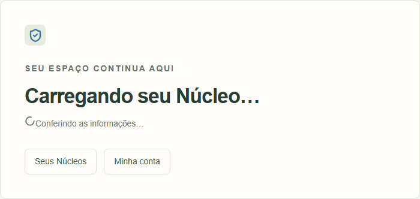
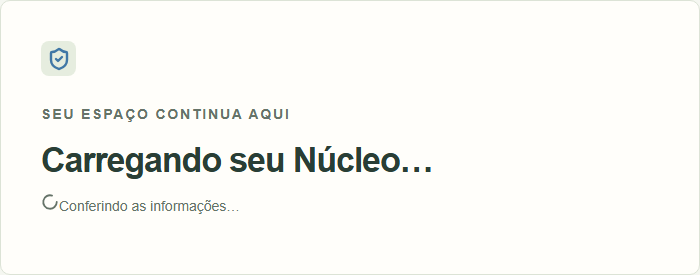
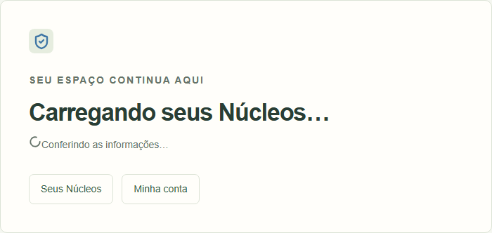
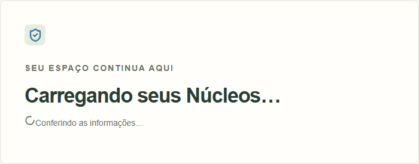
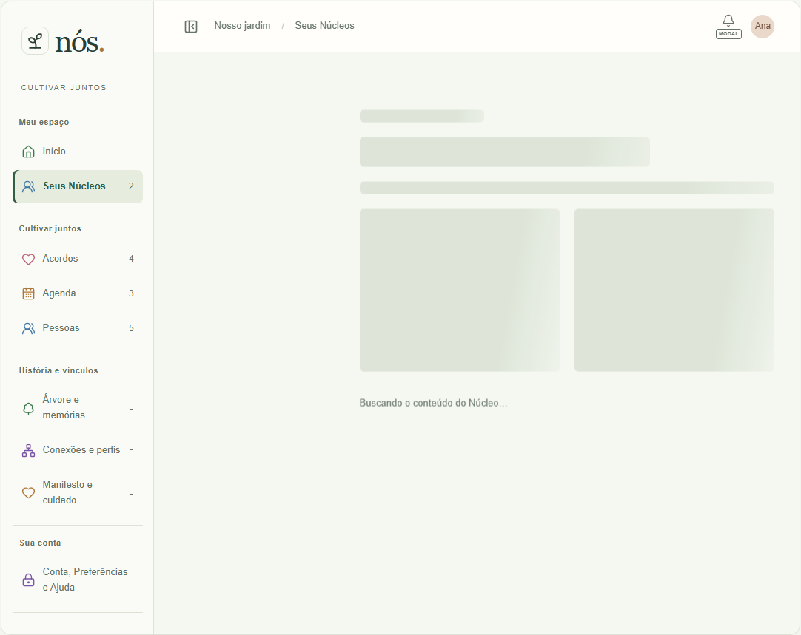
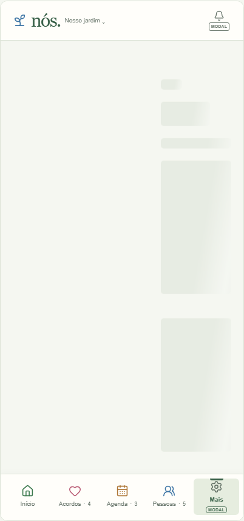
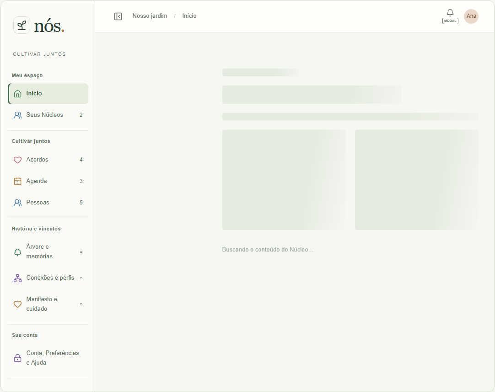
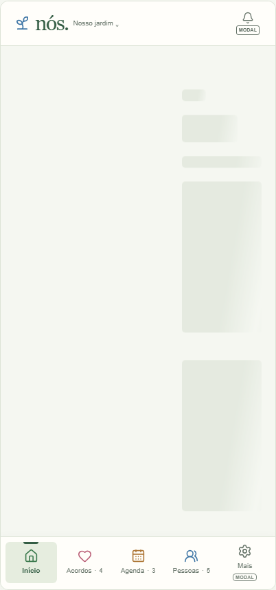

Removidos somente os atalhos Seus Núcleos e Minha conta dos carregamentos de lista e Núcleo selecionado. Antes dos componentes reais da revisão publicada e77da4b, depois dos componentes atuais, renderizados isoladamente com roteador/shell substituídos no teste. Não representa a rota autenticada completa nem certifica transição de rede. Viewports1440×1000/390×844, meta viewport no celular e escala do dispositivo. Textos/indicadores preservados; erro mantém ações. Atlas12/13 já tinha carregamentos sem ações, conferidos em Web/Celular.







